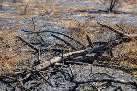

기후

건기
1. 인도네시아 건기는 5월에서 10월까지이며, 이시기에는 비가 상대적으로 오지 않기 때문에, 여행하기에 적절할 수 있다.
2. 자카르타 기준으로, 약 32~34도에 습도는 70~80% 이고, 이는 한국 서울의 6월 날씨와 비슷하다고 보시면 얼추 맞다.
3. 발리는 자카르타보다 덜 덥고, 반둥은 발리보다도 덜 덥다. 그래서 젊은 남성분들은 덥다고 느낄 수 있고, 여성분이나 활력이 적은 노인분들은 별로 덥지 않다고 느낄 수 있다.